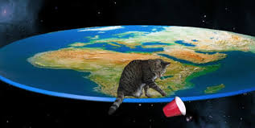

EaRtH IS FLAt!
SphericalEarthOr Earth'sCurvatureNOt REal!In the 3rd century BC,HellenisticAstronoMYestablished thEroughlySPherical shapEofEartHasa physicAl factanDcalculated theEaRth's circumference.ThisknowledgEwasGradually adopted throughoutthEOldWorlDduring LaTeAntiquityAnd thEMiddleAges.
